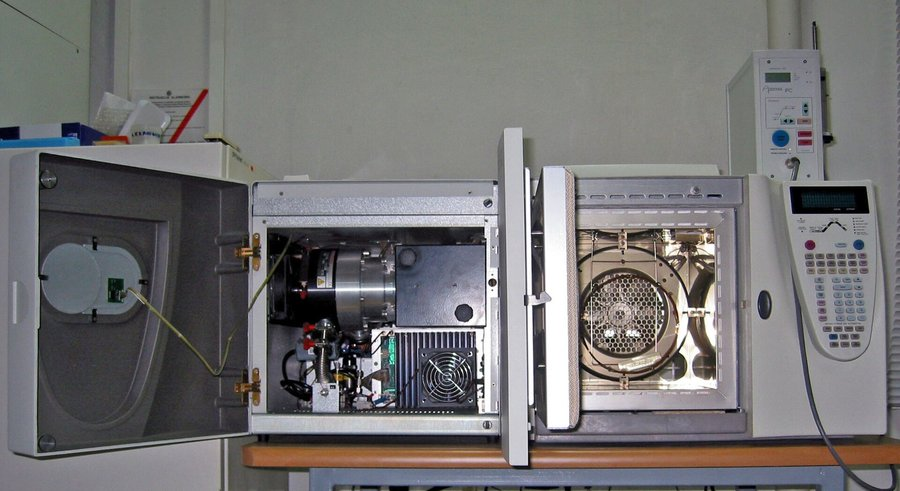
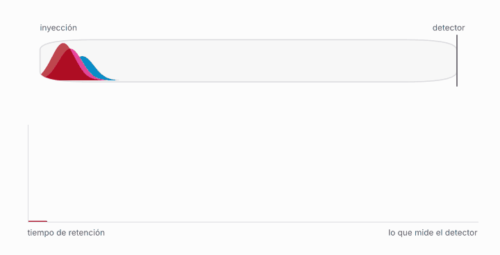

Teoría de Transporte Óptimo · FCEN–UBA · Capítulo 12
Paso 1 de 7

Separa los componentes de una mezcla. La muestra se inyecta en un extremo de una columna, un tubo largo y fino (de decenas de metros en cromatografía de gases, de unos pocos centímetros en la líquida). Un flujo constante de gas o de líquido la arrastra, y cada compuesto avanza más rápido o más lento según cuánto se «pega» a las paredes o al relleno de la columna. A la salida, un detector mide cuánta masa pasa en cada instante. Cada compuesto sale como un pico, y el tiempo en que sale, su tiempo de retención, es lo que permite identificarlo.

Es el problema de rutina de cualquier laboratorio que repite mediciones: la misma muestra, corrida muchas veces o durante años, da picos que no caen siempre en el mismo instante. En la industria se lo llama alineación de cromatogramas y se lo enfrenta, por ejemplo, en análisis clínicos, en investigaciones de fraude alimentario y en la medición de hidrocarburos en refinerías[1]. Y es un terreno donde el transporte óptimo ya se usa: el método Alignstein empareja los picos de distintas corridas de LC-MS con una distancia de Wasserstein generalizada, y se probó con mejillones expuestos a benzo[a]pireno[2]. Lo que sigue es la versión más simple de esa idea, con tres picos y la recta como espacio de tiempos.
Los factores que se citan son la temperatura ambiente y el programa de temperatura de la columna, el caudal del gas portador[3], una fase móvil inestable, el desgaste o el cambio de la columna, y un armado experimental imperfecto[2]. En corridas largas de líquidos el corrimiento puede llegar a 5–10 minutos[2].
A primer orden, el tiempo que tarda un compuesto en salir es el tiempo que tarda en cruzar la columna una molécula que no interactúa con ella, que es inversamente proporcional al caudal, multiplicado por un factor que depende de cuánto se pega. Si el caudal cambia un poco, todos los tiempos se estiran en la misma proporción, que es el factor a. Un retraso en la inyección o un volumen muerto en las conexiones suma una constante, que es b. Por eso la corrección estándar es afín, y vale para todos los picos a la vez, que es lo que supone la primera simulación. Pero es una aproximación: la temperatura afecta de manera distinta a cada compuesto, y los autores que miden estas derivas las describen como «a menudo no lineales e impredecibles»[3]. Esa es la bisagra de esta página: mientras la deriva sea común a todos los picos, el método estándar —normalizar cada corrida y promediar— es exacto y no hace falta nada más. Cuando cada compuesto deriva por su cuenta, deja de alcanzar, y ahí entra el baricentro.